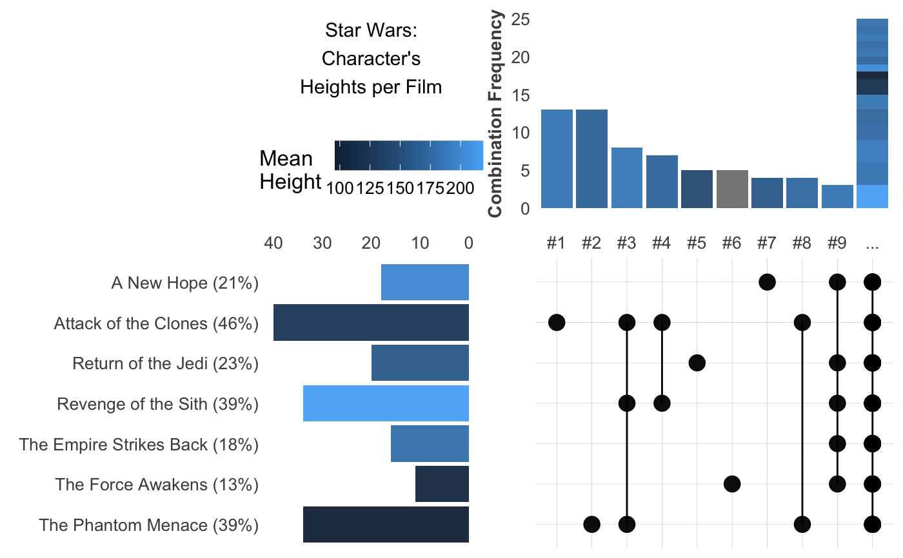

Visualize frequency of elements on a list or list vector, which combinations and elements are the most frequent. Your variable can be a character vector with comma separated values or a list vector.
freqs_list( df, var, wt = NA, fx = "mean", rm.na = FALSE, limit = 10, unique = TRUE, abc = FALSE, title = "", plot = TRUE )
Arguments
| df | Data.frame |
|---|---|
| var | Variable. Variables you wish to process. |
| wt | Variable, numeric. Select a numeric column to use in the colour scale, used as sum, mean... of those values for each of the combinations. |
| fx | Character. Set operation: mean, sum |
| rm.na | Boolean. Remove NA value from |
| limit | Integer. Show top n combinations and elements. The rest will be grouped into a single element. |
| unique | Boolean. a,b = b,a? |
| abc | Boolean. Do you wish to sort by alphabetical order? |
| title | Character. Added to the plot. |
| plot | Boolean. Plot viz? |
See also
Other Frequency:
freqs_df(),
freqs_plot(),
freqs()
Other Exploratory:
corr_cross(),
corr_var(),
crosstab(),
df_str(),
distr(),
freqs_df(),
freqs_plot(),
freqs(),
lasso_vars(),
missingness(),
plot_cats(),
plot_df(),
plot_nums(),
summer(),
tree_var(),
trendsRelated()
Other Visualization:
distr(),
freqs_df(),
freqs_plot(),
freqs(),
gg_bars(),
gg_pie(),
noPlot(),
plot_chord(),
plot_survey(),
plot_timeline(),
summer(),
theme_lares2(),
theme_lares(),
tree_var()
Examples
#> # A tibble: 6 x 14 #> name height mass hair_color skin_color eye_color birth_year sex gender #> <chr> <int> <dbl> <chr> <chr> <chr> <dbl> <chr> <chr> #> 1 Luke… 172 77 blond fair blue 19 male mascu… #> 2 C-3PO 167 75 NA gold yellow 112 none mascu… #> 3 R2-D2 96 32 NA white, bl… red 33 none mascu… #> 4 Dart… 202 136 none white yellow 41.9 male mascu… #> 5 Leia… 150 49 brown light brown 19 fema… femin… #> 6 Owen… 178 120 brown, gr… light blue 52 male mascu… #> # … with 5 more variables: homeworld <chr>, species <chr>, films <list>, #> # vehicles <list>, starships <list>#> [[1]] #> [1] "The Empire Strikes Back" "Revenge of the Sith" #> [3] "Return of the Jedi" "A New Hope" #> [5] "The Force Awakens" #> #> [[2]] #> [1] "The Empire Strikes Back" "Attack of the Clones" #> [3] "The Phantom Menace" "Revenge of the Sith" #> [5] "Return of the Jedi" "A New Hope" #>df %>% freqs_list(films)#> [1] "fair" "gold" "white, blue" "white" "light" #> [6] "light"x <- freqs_list(df, skin_color)#> $plot #> [1] "data" "layers" "scales" "mapping" "theme" #> [6] "coordinates" "facet" "plot_env" "labels" "patches" #> #> $ohe #> [1] "vals" "fair" "gold" "blue" #> [5] "white" "light" "red" "unknown" #> [9] "green" "brown" "green-tan" "pale" #> [13] "metal" "dark" "brown mottle" "grey" #> [17] "mottled green" "orange" "yellow" "tan" #> [21] "silver" "none" #> #> $elements #> [1] "element" "n" "wt" "p" "order" #> #> $combinations #> [1] "combination" "n" "wt" "p" #> [5] "order" "fair" "light" "dark" #> [9] "green" "grey" "pale" "brown" #> [13] "blue" "white" "orange" "tan" #> [17] "unknown" "yellow" "red" "green-tan" #> [21] "silver" "brown mottle" "gold" "metal" #> [25] "mottled green" "none" #># A more complex parameter set using the 'wt' argument freqs_list(df, films, wt = height, abc = TRUE, limit = 9, title = "Star Wars:\nCharacter's\nHeights per Film")#>